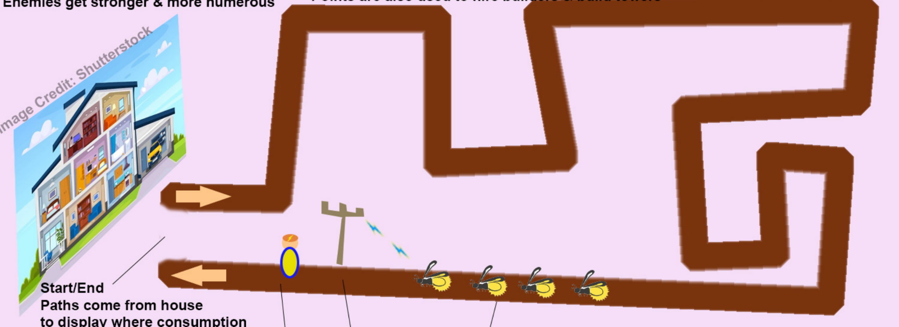

MUCK OFF!
Concept Overview
A fast paced tower defense game where players will deploy tradesmen to defend their home against pollution monsters. Sustainable upgrades and career based synergies make tradies even stronger, teaching players that green choices are winning choices.
Genre and Target Audience
Primary genre: Tower Defense
Secondary genre: Strategy, Educational
Target audience: Primary school students aged 10-12
Core Gameplay Mechanics
Progression and Currency
Earn currency (Eco-Bucks) for each enemy killed, use Eco-Bucks to buy more towers. Each wave will introduce more and or stronger enemies, therefore stronger defenses will have to be purchased after each wave.
Controls
Left click to drag and drop towers from the buy section, placed in strategic positions along the path. Right clicking on a tower will provide a description and some basic info about the role, damage type, damage amount, and relevant synergies, and also a sell option to refund the tower at x% of original purchase price.
Health System
The house will start with x HP, and will lose 1 HP per enemy that touches it.
0 HP = game over.
Basic Towers (each tower retains its basic attack after gaining a synergy upgrade) |
|---|
Electrician Basic ability - Cable Whip (short range melee damage) Eco Synergy - Solar Panel Upgrades to - Solar Panel Installer New Ability - Surge (chains lightning across enemies) Non Eco Synergy - Diesel Generator New Ability - ??? (AOE damage BUT stuns ally towers for 3 seconds) |
Plumber Basic ability - High Pressure Hose (enemy pushback) Eco Synergy - Rainwater Tank Upgrades to - ?? New Ability - ?? (creates water puddles that slow enemies) Non Eco Synergy - ?? something sewage related?? New Ability - ?? |
Roofer Basic ability - Shingle Toss (ranged damage) Eco Synergy - ?? Upgrades to - ?? New Ability - ?? Non Eco Synergy - Asphalt Roof Roll New Ability - Tar Toss (aoe slow BUT ??) |
Gardener Basic ability - Bloom (deploys damage dealing flower every x seconds) Eco Synergy - Pollinator Garden Upgrades to - Landscaper ?? New Ability - Bees (attracts bees around spawned flowers that deal damage) Non Eco Synergy - Chemical fertiliser New Ability - Toxic Buds (flowers explode on contact with enemies BUT also destroy other nearby flowers) |
Art and Visual Style
The game will have an isometric low poly cartoon style. It will feature fresh and ‘eco friendly’ colours and bright pops of colour, which will contrast well with the enemies. Enemies will all be pollution themed and look obviously ‘wrong’. For visual style inspiration refer to Overcooked ???
Primary Colours – (Core Environment)
- 🟩 Soft Greens (Grass, Growth, Calmness)
- 🟫 Warm Browns (Wood, Stability, Grounding)
- 🟦 Muted Sky Blues (Open skies, Imagination, Freedom)
Soft, Earthy Tones designed to stimulate calmness, encouraging prolonged creativity without sensory overload:
Accent Colours (Educational & UI Elements)
- 🟨 Light Yellow (Guidance, Attention, Educational Prompts)
- 🟧 Warm Orange (Actionable Items, Interactive Elements)
- ⬜ Soft White (Neutral UI backgrounds, Clear Text Readability)
Distinct yet complementary tones to clearly guide players and highlight interactive and educational elements.
Audio & Music
???
Platforms
PC
Competitive Analysis
What similar games exist and how is ours different?
(Level design vibe - remake image more concise and pretty
